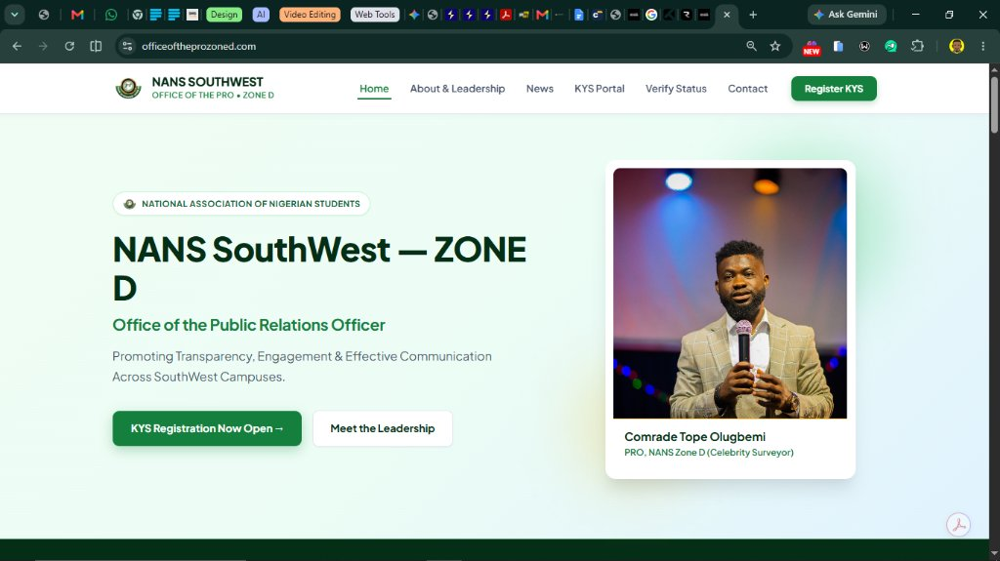

Project Overview
The Office of the Zone D PRO serves as the official communication organ of the National Association of Nigerian Students (NANS) Zone D, representing tertiary institution students across the six South-Western states of Nigeria (Lagos, Ogun, Oyo, Osun, Ondo, and Ekiti).
To move beyond chaotic social media press releases, unverified broadcast forwards, and fragmented campus student union politics, I engineered a dedicated institutional digital platform at officeoftheprozoned.com. The platform acts as a trusted single source of truth for official communiqués, student leadership verification, campus blogger syndication, and civic engagement.

The Problem Solved
Student leadership across South-West Nigeria previously struggled with major communication and governance friction:
✕ The Pre-Platform Bottlenecks
- Misinformation & Fake Communiqués: Malicious actors routinely circulated forged press releases on WhatsApp, confusing student bodies.
- Unverified Student Union Senators: Difficulty verifying whether self-proclaimed campus delegates were genuine accredited senators representing their institutions.
- Uncoordinated Campus Press: Campus journalists had no verified submission conduit to escalate campus stories to zonal leadership.
- Ephemeral Documentation: Crucial zonal resolutions, historical events, and leadership achievements were lost in chat logs.
✓ The Digital Solution
- Cryptographically Authenticated Portal: Official announcements published directly by accredited zonal PRO administrators.
- Know Your Senator (KYS) Subsystem: Dedicated student senator registration, document verification, and status validation engine.
- Decentralized Campus Blogger Network: Role-based accounts for student journalists to draft campus articles for zonal editorial approval.
- Cloud-Backed Zonal Archive: Structured leadership directories, multimedia press galleries, and searchable historical news records.
The Solution Developed
The project is architected as an interconnected MERN ecosystem composed of three discrete software components:
Official News & Headlines CMS
Dynamic news engine with slug-based routing, Cloudinary media optimization, category tags, reader view tracking, and reader engagement comments.
Know Your Senator (KYS) Registry
Student senator verification portal allowing institutional student leaders to submit credentials, check verification status, and maintain authentic representation.
Campus Blogger Management
Multi-tenant journalism workflow allowing campus correspondents across South-West tertiary institutions to submit articles into an editorial review pipeline.
Zonal Executive Dashboard
Secure administrative control center managing leadership rosters, press inquiries, audit logs, homepage hero banners, and visitor analytics.
Core Features & User Journeys
- Public Information Hub: High-speed responsive homepage with real-time news tickers, featured zonal headlines, leadership profiles, and downloadable official documents.
- Dual-Backend Service Decoupling: The content delivery system (
Blog Backend) and civic registry (KYS Backend) are architected as decoupled microservices for security and fault isolation. - Cloudinary Multimedia Pipeline: Automatic image resizing, optimization, and responsive delivery for news hero images and executive portraits.
- Inquiry & Press Management: Direct public contact form funneling inquiries into the administrative dashboard with email alert triggers.
- Role-Based Route Guards: Client and server-enforced authorization separating Super Admins, Blog Admins, and Student Bloggers.
Dual-Backend Architecture
News, Blogger, Leadership, Student, Admin, AuditLog, Inquiry.My Technical Contributions
- Full-Stack Architecture: Engineered both backend services and the unified React frontend application.
- Editorial CMS Engine: Built the multi-role blogging and article review pipeline with rich text support and Cloudinary media uploads.
- Civic Verification System: Implemented the KYS workflow enabling institutional verification for student union senators.
- Production Deployment & Domain Setup: Configured DNS, SSL, and Vercel hosting for the official live domain at
officeoftheprozoned.com.
Technology Stack
Engineering Decisions & Security Measures
Civic verification data contains sensitive student records and identification numbers, whereas the news blog handles high-traffic public reads. By isolating the two into distinct backend modules (Blog Backend and KYS Backend), traffic spikes on breaking news cannot degrade the civic verification service, and sensitive student records remain isolated behind strict network guards.
To guarantee that official communiqués index rapidly on search engines and share cleanly across WhatsApp and Twitter, news articles use unique, sanitized URL slugs with OpenGraph social metadata tags populated dynamically at request time.
Operational Impact
The platform elevated the Office of the Zone D PRO from an ad-hoc social media presence to an accredited, institutional digital authority. It eliminated forged communiqués, created a credible historical record of South-West student affairs, and provided campus journalists with a dignified, accredited channel to report university news.